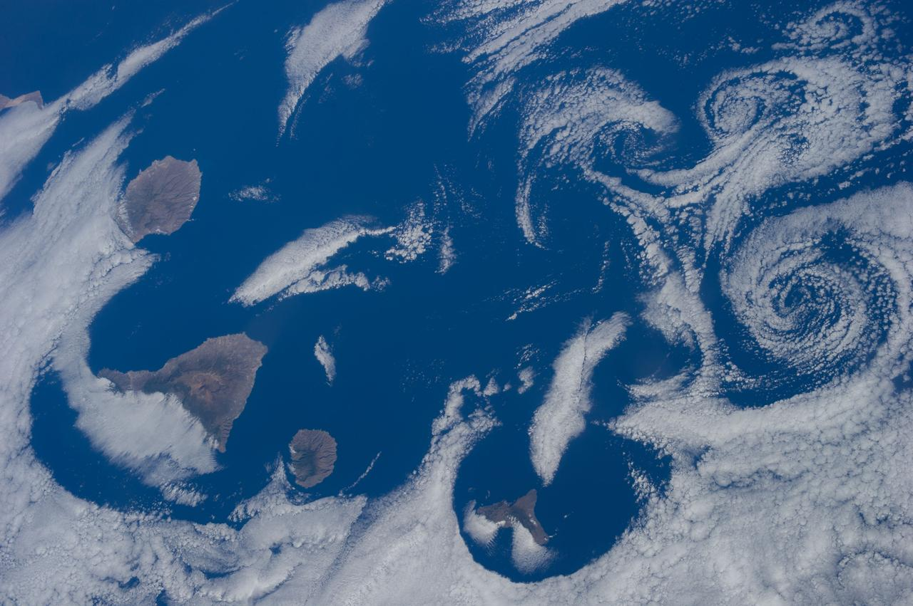
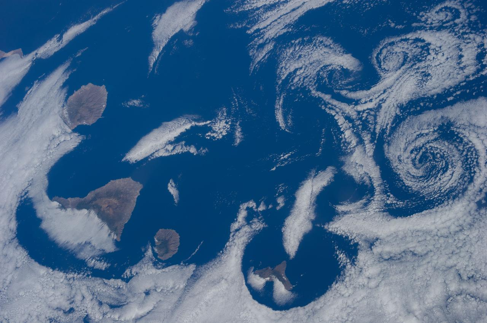

Overview of Our Earth
Earth, our home planet, is the third celestial body from the Sun and the only known world to support life. This vibrant blue and green sphere, with a diameter of about 12,742 kilometers (7,918 miles), harbors a rich diversity of ecosystems, from sprawling deserts to dense forests, vast oceans to towering mountain ranges. The atmosphere, composed primarily of nitrogen and oxygen, shields the planet from harmful solar radiation and moderates temperature, creating a habitable environment. Earth’s rotation on its axis and its orbit around the Sun result in the rhythmic cycle of day and night and the changing seasons, which profoundly influence life and climate patterns.
Geologically, Earth is incredibly dynamic. Its crust is divided into several tectonic plates that float atop the semi-fluid mantle, leading to continental drift, earthquakes, and volcanic activity. The interplay of these forces has shaped Earth’s surface over billions of years, creating the continents and ocean basins. Beneath the crust lies the mantle, followed by the outer and inner cores composed mainly of iron and nickel. The movement of molten iron in the outer core generates Earth’s magnetic field, which protects the planet from solar wind and cosmic radiation, playing a crucial role in maintaining a stable atmosphere.
Human civilization has evolved significantly on Earth, leveraging the planet’s resources to develop agriculture, industry, and technology. However, this progress has also led to environmental challenges such as climate change, pollution, and biodiversity loss. Efforts are underway globally to address these issues through sustainable practices and policies aimed at preserving Earth's ecosystems and ensuring a healthy, habitable planet for future generations. Earth remains a precious and unique haven in the vast expanse of space, with its intricate balance of physical, chemical, and biological systems supporting a complex web of life.
Photos of The Earth

 


*All photos found at NASA